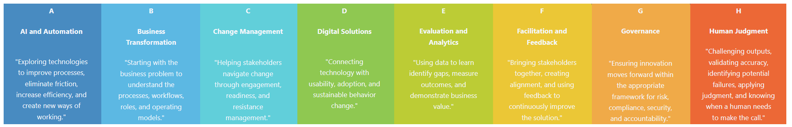
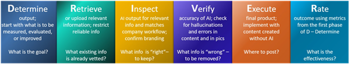

Together, these models allow me to blend proven methodology with practical, purpose-built tools. This ensures that learning and change initiatives are both credible and tailored to real-world outcomes. My approach to talent development draws on both established industry standards and frameworks I've developed to address specific gaps I've encountered in the field. This section reflects the models that shape how I design, deliver, and measure learning and change initiatives. I apply recognized industry models across three core disciplines: learning design (grounded in adult learning theory and instructional design best practices), change management (stakeholder alignment, communication planning, and sustainment strategies), and measurement (defining success metrics and translating data into a clear impact story).
Change Readiness
Kubler-Ross Change Model
Prosci ADKAR
Stakeholder Engagement
ADDIE
Adult Learning
Backward Design
Blended Learning
Bloom's Taxonomy
Competency Mapping
Instructional Design


Define the workforce vision and strategic direction.
• AI learning strategy
• Capability models (long-term, scalable, and sustainable)
• Future skills analysis
• Workforce development strategy
Develop actionable plans that drive successful outcomes.
• Assessments
• Knowledge, skills, attitude competencies (immediate performance)
• Skill gap analysis
• Stakeholder analysis
Build ecosystems and resources that the employees need to succeed.
• Coaching
• Knowledge resources
• Performance support
• Tools
• Training
Measure effectiveness and business impact.
• Adoption metrics
• Continuous improvement
• Learning analytics
• Performance outcomes